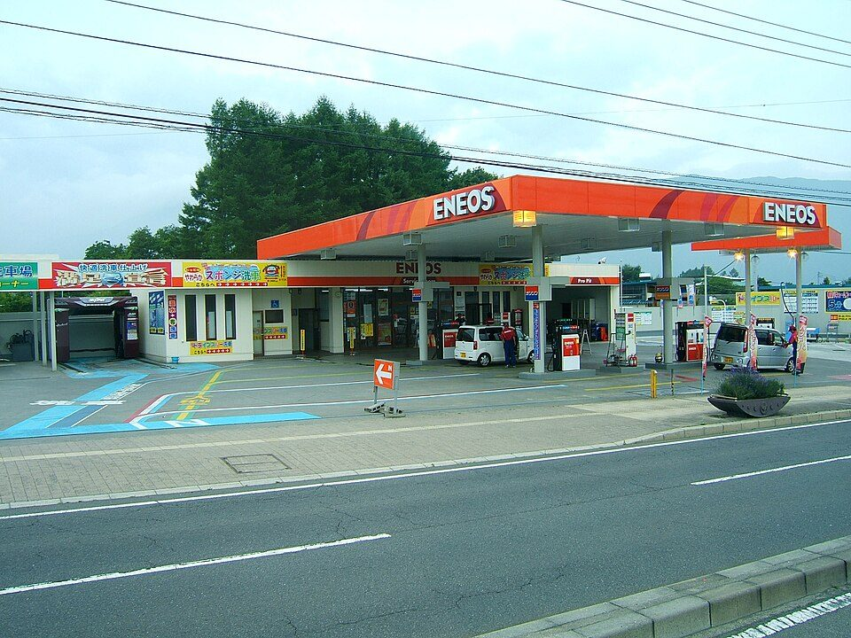
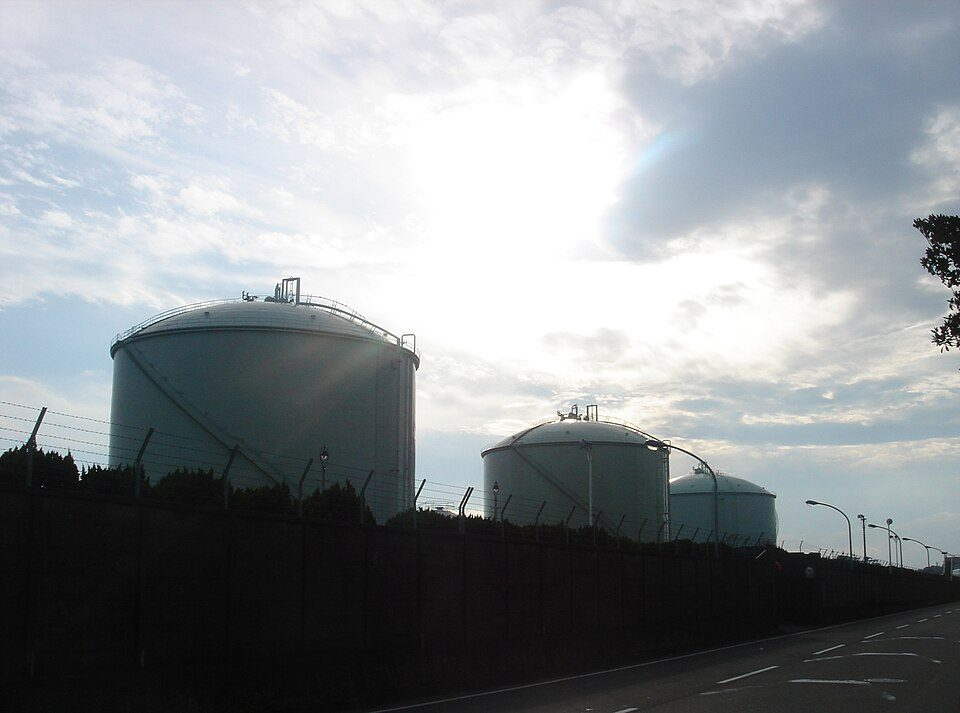
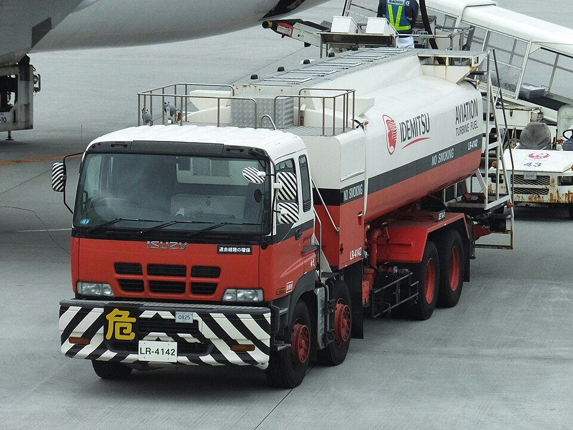
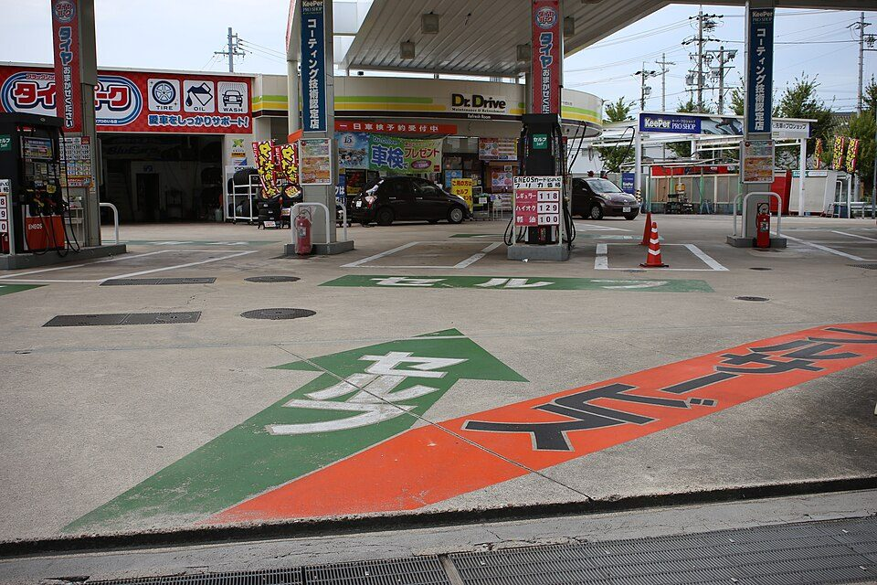
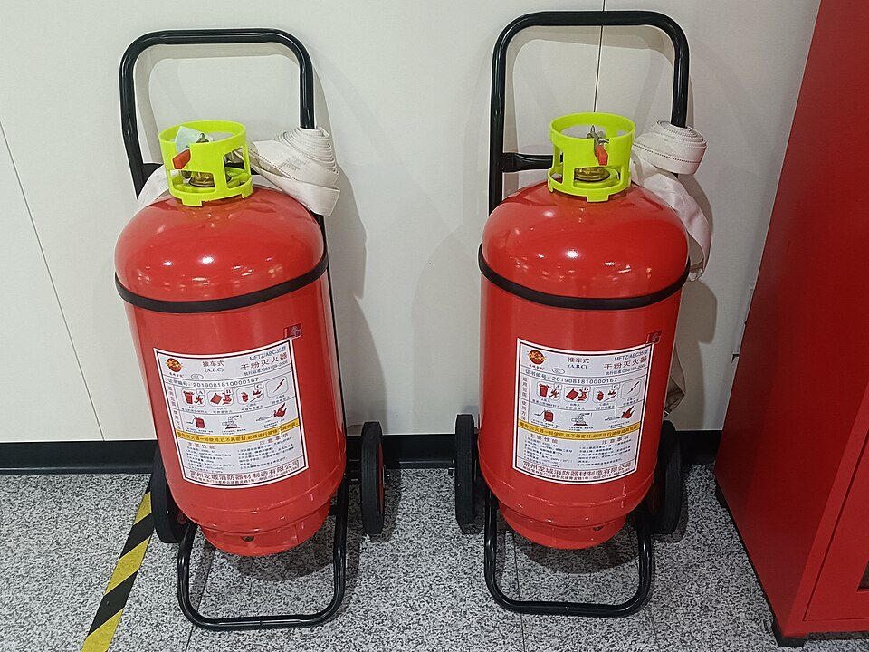

危険物取扱者乙4とは：できること、試験の中身と合格率、合格後の手続きと保安講習（2026年版）
要点まとめ
危険物取扱者は、ガソリンや灯油などの消防法上の「危険物」を扱うための資格です。試験を行う消防試験研究センターは、一定数量以上の危険物を貯蔵したり取り扱ったりする化学工場、ガソリンスタンド、石油貯蔵タンク、タンクローリーなどの施設には、必ず危険物取扱者を置かなければならないと説明しています[11]。なかでも乙種第4類（乙4）は、ガソリン・灯油・軽油などを扱える種類で、令和7年度の危険物取扱者試験の受験者311,230人のうち222,545人が乙4でした[6]。この記事では、乙4がどんな資格で何ができるか、どう受けるか、合格率、合格後に何が必要かを、消防法令と、消防試験研究センター・消防庁の資料でまとめました。勉強法や参考書ではなく、公式に決まっていることを中心にしています。

乙4で扱う「危険物」と第4類
消防法の「危険物」は、法律の別表第一に品名が並んでいる物品で、そこに書かれた性質（性状）をもつものです[8]。性質によって第1類から第6類に分かれていて、乙4が扱える第4類は「引火性液体」です[8][2]。
危険物は、性質で第1〜6類に分かれる
第4類は引火性液体。ガソリンや灯油が入る
試験センターは、第4類の例として、ガソリン、アルコール類、灯油、軽油、重油、動植物油類などを挙げています[2]。乙種の免状は類ごとに分かれていて、乙4の免状で扱えるのは第4類だけです[1]。
第4類は7つの品名。石油類は引火点で段が分かれる
石油類は、引火点の温度で第1〜第4に分かれる
第4類は、特殊引火物、第1石油類、アルコール類、第2石油類、第3石油類、第4石油類、動植物油類の7つの品名に分かれます[8]。第1〜第4石油類は、1気圧での引火点の温度で区切られています[8]。引火点は、液体から出る蒸気に火を近づけたときに引火する、液体の最低の温度のことで、試験センターが公開している乙4の過去問題にも、この意味で出題されています[12]。
| 品名 | 代表例 | 引火点（1気圧） | 指定数量 |
|---|---|---|---|
| 特殊引火物 | ジエチルエーテル、二硫化炭素 | −20℃以下で、沸点40℃以下（または発火点100℃以下） | 50L |
| 第1石油類 | アセトン、ガソリン | 21℃未満 | 200L（水溶性は400L） |
| アルコール類 | 炭素の数が1〜3個の飽和一価アルコール（変性アルコールを含む） | ―（分子のつくりで決まる） | 400L |
| 第2石油類 | 灯油、軽油 | 21℃以上70℃未満 | 1,000L（水溶性は2,000L） |
| 第3石油類 | 重油、クレオソート油 | 70℃以上200℃未満 | 2,000L（水溶性は4,000L） |
| 第4石油類 | ギヤー油、シリンダー油 | 200℃以上250℃未満 | 6,000L |
| 動植物油類 | 動物の脂肉や、植物の種子・果肉から抽出したもの | 250℃未満 | 10,000L |
品名・代表例・引火点は消防法の別表第一の備考[8]、指定数量は危険物の規制に関する政令の別表第三によります[13]。「水溶性」は、20℃で同じ量の純水とゆるやかに混ぜ、流れが収まったあとも均一な見た目を保つ液体のことです[13]。
試験センターの公開問題では、自動車ガソリンの引火点は−40℃以下、第1石油類のアセトンの引火点は常温（20℃）より低い、という記述が、どちらも正しいものとして扱われています[12]。ガソリンは、図の常温の線よりはるかに低い温度から引火する、ということです。
指定数量：これ以上は許可を受けた施設で
指定数量以上は、許可を受けた施設でしか扱えない
指定数量は、危険性を考えて政令で決められた数量です[8]。指定数量以上の危険物は、許可を受けた貯蔵所以外の場所で貯蔵したり、製造所・貯蔵所・取扱所以外の場所で取り扱ったりしてはいけません。所轄の消防長または消防署長の承認を受けて、10日以内の期間、仮に貯蔵・取扱いをする場合は例外です[8]。消防白書は、指定数量を、貯蔵や取扱いに許可が必要になる数量と説明しています[14]。

乙4でできること：甲・乙・丙の違い
危険物取扱者の免状は甲種・乙種・丙種の3種類で、試験に合格した人に都道府県知事が交付します[8]。種類によって、取り扱える危険物と、ほかの人の取扱いに立ち会えるかどうかが違います[1][2]。
| 項目 | 甲種 | 乙種（乙4の場合） | 丙種 |
|---|---|---|---|
| 取り扱える危険物 | すべての類[1] | 免状に書かれた類（乙4は第4類）[1] | ガソリン、灯油、軽油、第3石油類の一部（重油・潤滑油・引火点130℃以上）、第4石油類、動植物油類[1] |
| 免状のない人の取扱いへの立会い | できる | できる（免状の類） | できない[8][2] |
| 危険物保安監督者 | 実務6か月以上でなれる | 実務6か月以上でなれる | なれない[8] |
| 受験資格 | 必要[2] | なし | なし[2] |
| 問題数（法令・物理化学・性質消火） | 15・10・20問 | 15・10・10問 | 10・5・10問（物理化学の代わりに燃焼及び消火）[3] |
| 方式・試験時間 | 五肢択一・2時間30分 | 五肢択一・2時間 | 四肢択一・1時間15分[4] |
| 試験手数料（非課税） | 7,200円 | 5,300円 | 4,200円[4] |
| 合格率（令和7年度） | 34.0% | 31.9%（第4類） | 48.0%[6] |
自分で取り扱うことと、立ち会うこと
免状のない人も、甲種・乙種が立ち会えば扱える
製造所・貯蔵所・取扱所（まとめて「製造所等」）では、危険物取扱者以外の人は、甲種か乙種の危険物取扱者が立ち会わなければ危険物を取り扱えません[8]。立ち会う人は、作業する人が基準を守るよう監督し、必要に応じて指示をしなければなりません[13]。試験センターは、乙種は指定の類の危険物について、取扱いと定期点検、保安の監督ができると説明しています[11]。
実務6か月で、危険物保安監督者に
ガソリンスタンドは、監督者を定める施設にあたる
政令で定める製造所等の所有者などは、甲種か乙種の危険物取扱者で、6か月以上の実務経験がある人の中から危険物保安監督者を定め、保安の監督をさせなければなりません[8]。政令には監督者を定めなくてよい施設の一覧があり、移動タンク貯蔵所（タンクローリー）や、引火点40℃以上の第4類だけを扱う小規模な施設などが並んでいます。給油取扱所（ガソリンスタンド）はこの一覧に入っていないため、監督者を定める施設にあたります（政令の一覧からの読み取り）[13]。
タンクローリーには乗車して、免状を携帯
移送には、その危険物を扱える人の乗車が必要
移動タンク貯蔵所（タンクローリー）で危険物を移送するときは、その危険物を取り扱える危険物取扱者が乗車しなければならず、乗車中は免状を携帯していなければなりません[8]。試験センターは、タンクローリーの乗務など免状の携帯義務がある人の免状の申請や写真の書換えは、事前に支部へ相談するよう案内しています[7][17]。

ガソリンスタンドは2.7万か所
2025年3月末で27,009か所（登録ベース）
資源エネルギー庁によると、揮発油（ガソリン）販売業の登録にもとづく給油所の数は、令和6年度末（2025年3月末）で27,009か所でした。前年度末から405か所減り、平成27年度末の32,333か所から毎年減っています[18]。
セルフスタンドの監視と、甲種・乙種
1998年の通知では、監視する人は甲種か乙種とされる
客が自分で給油するセルフスタンド（顧客に自ら給油等をさせる給油取扱所）は、1998年（平成10年）4月から認められています[19]。規則は、こうした給油取扱所では、客の給油作業を直接見るなどして監視し、制御装置で給油の開始・停止をし、必要な指示をすることを定めています[1]。1998年3月13日の消防庁の通知では、制御卓での監視などは消防法第13条第3項の危険物取扱者の「立会い」として行うもので、監視などをする人は甲種か乙種の危険物取扱者である必要がある、とされています[20]。この通知がいまも改正・廃止されずに有効かどうかは、今回確認できませんでした。

新制度・改正 2026年2月：監視を装置が代わる仕組み
条件を満たす間は、装置が監視と制御を代わりに行う
2026年2月27日公布・翌日施行の規則改正で、セルフスタンドに「条件付自動制御装置」を使う場合の基準が加わりました[1][21]。規則の定義では、装置の使用条件を満たす場合に、係員が行う客の給油作業などの監視と、制御装置による制御を代わりに自動で行う装置です[1]。装置などが正常に作動し、使用条件を満たし、火気その他安全上の支障がないときは、係員が直接見るなどして監視し、給油を開始・停止するという規定は適用されません[1]。
一方、消防庁の通知は、装置が監視などを代わりに行う場合でも、係員は引き続き危険物の取扱いに関する責務を持つとしています[21]。規則と通知が定めているのは装置の機能と運用で、乙4などの資格が要らなくなるとは書かれていません。
化学工場やプラントで危険物がどう扱われているかは、化学プラントの基本構成と仕組みやプラントとは何かでも触れています。
試験の中身と申込み
| 項目 | 内容 |
|---|---|
| 受験資格 | なし。誰でも受けられる[2] |
| 試験科目と問題数 | 危険物に関する法令15問、基礎的な物理学及び基礎的な化学10問、危険物の性質並びにその火災予防及び消火の方法10問[3] |
| 方式 | マーク・カードを使う筆記試験。五肢択一式。実技はなし[4] |
| 試験時間 | 2時間[4] |
| 合格基準 | 試験科目ごとに60%以上[4] |
| 試験手数料 | 5,300円（非課税）。払い込んだら返金されない[2][4] |
| 受験地 | 住所・勤務地に関係なく、希望する都道府県[2] |
3科目それぞれで6割
1科目でも6割に届かなければ不合格
合格基準は、試験科目ごとの成績がそれぞれ60%以上であることです[4]。乙4の問題数にあてはめると、法令は15問中9問以上、物理・化学と性質・消火はそれぞれ10問中6問以上の正解が必要になります（筆者の計算）。
ほかの類を受けるときは科目免除
乙種の免状があれば、ほかの類は10問・35分
乙種の免状を1つでも持っている人がほかの類を受けると、法令と物理・化学が免除され、性質・消火の10問だけ、試験時間35分になります[15][3]。ただし、乙種の資格は免状の交付を受けて初めて取得したことになるため、申込みまでに免状が交付されていないと免除は受けられません[15]。
試験手数料は5,300円（非課税）
2024年5月1日に、4,600円から5,300円に
危険物取扱者試験の手数料の額は、地方公共団体の手数料の標準に関する政令で定められています[23][25]。消防庁が公表している積算根拠では、乙種の5,300円は、人件費3,017円と、印刷製本費・会場借上費などの物件費から計算されています[24]。
申込みは電子申請が中心に
2028年度からは、原則として電子申請のみの予定
2024年度（令和6年度）から、すべての試験の申込みで電子申請ができるようになりました[10]。いまは書面（受験願書）でも申し込めますが、試験センターは2026年6月19日に、2028年度（令和10年度）からの受験申込みは電子申請を原則とする予定だと発表しました[10][2]。電子申請の手数料の払い込みは、クレジットカード、コンビニエンスストア、ペイジー、メルペイ、PayPayの5種類から選べます[26]。
試験日は都道府県ごと
東京都では、令和8年度に乙4の試験日が40日
試験は東京の中央試験センターと道府県の支部で行われ、住所や勤務地に関係なく、希望する都道府県で受験できます[2]。日程や受付期間は都道府県ごとに違い、年度の途中で変わることもあります[2][15]。試験センターの日程表（2026年11月19日時点）で数えると、東京都では令和8年度（2026年4月〜2027年3月）に乙4を受けられる試験日が40日あります[28][29]。
公式の勉強材料は「過去に出題された問題」
試験センターが、過去の問題の一部を公開している
試験センターは、危険物取扱者として身につけるべき知識・技能の目安を示すため、過去の問題の一部を公開しています。乙4用もあり、令和7年度以前に出題した問題で、2026年6月に更新されています[30]。乙4のPDFは、法令、物理・化学、性質・消火の順に35問が並び、解答は最後のページにあります[12]。試験センター自身は、公平・公正な試験のため、参考書や問題集の出版・販売、受験準備講習を行っていません[15]。
コンピューター方式（CBT）は？
試験の方式は、マーク・カードを使う筆記試験です[4]。試験センターのサイト（受験案内・よくある質問・電子申請の案内）を見た範囲では、コンピューター方式（CBT）の案内は見当たりませんでした（2026年11月19日時点）。
合格率の推移
消防試験研究センターの統計では、乙4の合格率は令和元〜2年度の38.6%から下がり、令和4年度以降は31.5〜32.0%で推移しています[31][5][32][6]。受験者は毎年20万人を超えています。
令和7年度は、申請者256,468人のうち222,545人が受験し、71,059人が合格しました[6]。
受験者の約7割が乙4
令和7年度は、受験者311,230人のうち222,545人
令和7年度の危険物取扱者試験の受験者は全体で311,230人、そのうち乙4が222,545人でした[6]。消防白書も、受験者数では乙種第4類が最も多いとしています[14]。制度ができてからの合格者の累計は、令和7年3月31日現在で1,040万6,300人です[14]。
受験者数は、乙4が222,545人、乙種のほかの類が7,931〜10,972人、甲種が20,296人、丙種が19,969人で、種類によって大きく違います[6]。合格率に差がある理由は、公表されている統計には書かれていません。
令和8年度は、4〜9月で34.6%
前年度の同じ時期（32.0%）より高い
令和8年4〜9月の途中経過では、乙4の受験者は96,283人、合格者は33,324人で、合格率は34.6%でした。前年度の同じ時期は32.0%です[33]。年度の途中の数字なので、年度全体の値とは変わることがあります。
合格後の手続きと保安講習
消防法の「危険物取扱者」は、免状の交付を受けている人のことです[8]。試験センターも、乙種の資格は免状の交付を受けなければ取得したことにならないとしています[15]。申込みから免状、その後の講習・書換えまでを順に並べると、次のとおりです。
- 申込み
電子申請か書面で申し込む
手数料5,300円（非課税）[2]
- 試験の約10日前
受験票を印刷して写真を貼る
- 試験当日
35問・2時間の筆記試験
- 合格発表
試験結果通知書が届く
- 合格したら
免状の交付を申請する（1種類2,900円）
受験した道府県の支部（東京都は中央試験センター）へ。試験日から6か月以上たつと写真が新たに必要[7]
- 交付
免状を受け取る
郵送で受け取るなら、460円分の切手を貼った封筒を出す[7]
- 仕事で扱うなら
保安講習を受ける
取扱作業に従事することになった日から原則1年以内[1]
- 10年ごと
免状の写真を書き換える（1,600円）
交付から10年が過ぎる前に申請する[17]
免状の手数料と、写真の書換え
交付2,900円、写真の書換え1,600円、再交付1,900円
免状の交付手数料は1種類につき2,900円で、複数の類を一度に申請するときも種類ごとに必要です[7][16]。免状の写真は過去10年以内に撮影したものとされていて、10年に1回、写真の書換えが必要です（手数料1,600円）[1][17]。なくしたり汚したりしたときの再交付は1,900円です[35]。免状の手数料は都道府県の条例で定められ、消費税は非課税です[16]。写真の書換えの期限を過ぎても免状は失効しませんが、法令で定められているので速やかに書換えを申請するよう、試験センターは求めています[16]。
保安講習は「取扱作業に従事する人」の義務
製造所等で危険物の取扱作業をする人が対象
消防法は、製造所・貯蔵所・取扱所で危険物の取扱作業に従事する危険物取扱者に、都道府県知事など（総務大臣が指定する市町村長その他の機関を含む）が行う保安講習の受講を義務づけています[8]。免状を持っていても取扱作業に従事していなければ、この条文の対象には当たらないと読めます（筆者の読み取り。個別の職場での扱いは、所轄の消防本部などに確かめてください）。
受講の時期は、規則で次のように決まっています。取扱作業に従事することになった日から1年以内に受講し、その後は、受講した日以後の最初の4月1日から3年以内ごとに受講します。従事する日の前の2年以内に免状の交付か講習の受講があった人は、その日以後の最初の4月1日から3年以内に受講すればよいとされています[1]。
講習の手数料は5,300円（非課税）
都道府県の講習も、オンライン講習も5,300円
都道府県が行う講習の手数料は、地方公共団体の手数料の標準に関する政令で、標準の額が5,300円とされています[25]。指定講習機関（全国危険物安全協会）が行うオンライン講習の手数料は、危険物の規制に関する政令で5,300円と決まっています[13]。栃木県と全国危険物安全協会は、どちらも5,300円（非課税）と案内しています[36][41]。
新制度・改正 2025年6月から、オンラインでも受講できる
全国危険物安全協会が、約3時間の講習を配信
消防庁は、2024年9月4日に一般財団法人全国危険物安全協会を保安講習の指定講習機関に指定したと知らせています[42]。背景には、対面講習を原則としてデジタルで完結させるとした、政府の「デジタル原則に照らした規制の一括見直しプラン」（2022年6月）があります[43]。協会のオンライン講習は、2025年6月2日に始まりました[9]。
受講しないままだと
栃木県は、保安講習を受けない場合は、消防法第13条の2第5項による免状の返納命令の対象になることもあると説明しています[36]。この条文は、危険物取扱者が消防法などに違反しているとき、免状を交付した都道府県知事が返納を命じることができると定めています[8]。
安全と事故の傾向
消防庁は毎年、危険物施設で起きた事故をまとめています。令和7年（2025年1〜12月）の数字は次のとおりです。
令和7年の事故は709件
火災261件、流出448件。前年より44件少ない
令和7年中の危険物施設の事故は、火災事故が261件（前年267件）、流出事故が448件（前年486件）でした[44]。合わせて709件で、前年より44件減りました[45]。被害は、火災で死者1人・負傷者44人、流出で死者1人・負傷者24人です。最大震度6弱以上の地震による被害は、この集計から除かれています[44]。
事故の中心は第4類
流出事故は448件すべてが第4類の危険物
危険物が出火原因になった火災129件のうち、120件（93.0%）が第4類でした。第4類の品名別では、第1石油類が60件で最も多くなっています[44]。流出事故では、流れ出た危険物は448件すべてが第4類で、第2石油類159件、第1石油類114件、第3石油類111件の順でした[44]。乙4で扱う第4類が、危険物が原因の火災の9割以上と、流出事故のすべてにかかわっています。
火災の着火原因は、静電気が最も多い
着火原因は、静電気火花が53件で最も多い
火災事故の発生原因を分けると、人的要因が155件（59.4%）で最も多く、物的要因が73件（28.0%）でした[44]。流出事故では物的要因が227件（50.7%）で最も多く、そのうち腐食・疲労などの劣化が148件（33.0%）でした[44]。
施設は減り、事故は増える傾向
グラフでは、施設数は減る一方で事故は増えてきた
消防庁の資料の第1図（平成元年から令和7年までの推移）を見ると、危険物施設の数は減り続けている一方、火災と流出を合わせた事故の件数は、平成6年（1994年）ごろを底に増える傾向にあり、令和6年が最も多くなっています（筆者がグラフから読み取り）[44]。

セルフスタンドで給油するときの注意
静電気を除き、ガソリンを容器に小分けしない
消防庁は、セルフスタンドで給油するときの注意として、静電気除去シートなどで静電気を十分に除くこと、油種をよく確かめること、ライターやたばこなどの火気を使わないこと、客がガソリンを容器に小分けしないこと、自動車・原動機付自転車以外に給油しないことを挙げています。冬は、衣服などで体に帯電しやすい季節だとしています[19]。
2025〜2026年の主な変更
直前の2024年の手数料改定から、2026年までの主な変更を時期の順に並べました。
| 時期 | 変わったこと |
|---|---|
| 2024年5月1日 | 乙種の試験手数料が4,600円から5,300円に[24]。都道府県の保安講習の手数料の標準額も4,700円から5,300円に[38] |
| 2024年度 | すべての試験の申込みで電子申請ができるようになった[10] |
| 2024年9月4日 | オンライン保安講習を行う指定講習機関として、全国危険物安全協会を指定[42] |
| 2025年5月15日 | 指定講習機関の講習手数料が4,700円から5,300円に[40] |
| 2025年6月2日 | オンライン保安講習が始まった[9] |
| 2026年2月28日 | セルフスタンドの条件付自動制御装置にかかわる規則改正を施行（2月27日公布）[1][21] |
| 2026年4月1日 | 栃木県の収入証紙の販売停止（2027年4月1日から使えなくなる。県ごとの例）[36] |
| 2026年6月 | 公開問題を更新（令和7年度以前に出題した問題）[30] |
| 2026年6月19日 | 2028年度からの受験申込みを、原則として電子申請にする予定と発表[10] |
| 2026年6月30日 | 甲種の受験資格のうち、専修学校の専門課程に関する規則改正を施行（2026年4月1日以後の入学者に適用）[1] |
今回確認できなかった点
- セルフスタンドの監視をする人を甲種・乙種とした1998年の消防庁の通知が、改正・廃止されずにいまも有効かどうか
- 条件付自動制御装置を使うセルフスタンドで、係員に求められる資格の扱い（規則と通知には書かれていなかった）
- 危険物取扱者試験にコンピューター方式（CBT）を導入する予定があるかどうか
- 試験科目の名前より細かい、公式の出題範囲
- 乙4とほかの類とで合格率に差がある理由
- 令和7年度末（2026年3月末）の給油所数と、最近のセルフスタンドの数
- 受験者の年齢などの内訳
出典（45件）
閲覧日はいずれも2026年11月19日
- 危険物の規制に関する規則（e-Gov法令検索）
- 危険物取扱者試験（一般財団法人 消防試験研究センター）
- 試験科目及び問題数（危険物取扱者試験）（一般財団法人 消防試験研究センター）
- 試験の方法（危険物取扱者試験）（一般財団法人 消防試験研究センター）
- 試験実施状況（令和4年4月～令和5年3月）（一般財団法人 消防試験研究センター）
- 試験実施状況（令和7年4月～令和8年3月）（一般財団法人 消防試験研究センター）
- 新規免状の交付（一般財団法人 消防試験研究センター）
- 消防法（e-Gov法令検索）
- オンラインによる危険物取扱者保安講習の実施について（令和7年度の公示、PDF）（一般財団法人 全国危険物安全協会）
- 令和10年度から受験申込みは電子申請を原則とします（2026年6月19日、PDF）（一般財団法人 消防試験研究センター）
- 危険物取扱者について（一般財団法人 消防試験研究センター）
- 過去に出題された問題 乙種第４類 危険物取扱者試験（PDF）（一般財団法人 消防試験研究センター）
- 危険物の規制に関する政令（e-Gov法令検索）
- 令和7年版 消防白書 第1章第2節「1．危険物規制」（総務省消防庁）
- よくある質問（危険物取扱者試験）（一般財団法人 消防試験研究センター）
- よくある質問（免状）（一般財団法人 消防試験研究センター）
- 写真の書換え（一般財団法人 消防試験研究センター）
- 揮発油販売業者数及び給油所数の推移（登録ベース）（2025年7月30日、PDF）（経済産業省 資源エネルギー庁）
- 消防の動き 2019年12月号「セルフスタンドにおける安全な給油について」（PDF）（総務省消防庁）
- 顧客に自ら給油等をさせる給油取扱所に係る運用について（消防危第25号、1998年3月13日、PDF）（消防庁（危険物規制課長通知））
- 危険物の規制に関する規則の一部改正に伴う顧客に自ら給油等をさせる給油取扱所における条件付自動制御装置の使用に係る運用について（消防危第37号、2026年2月27日、PDF）（消防庁（危険物保安室長通知））
- 受験資格（危険物取扱者試験）（一般財団法人 消防試験研究センター）
- 危険物取扱者に関する試験事務手数料及び積算根拠（令和元年10月1日施行、PDF）（総務省消防庁）
- 危険物取扱者試験に関する試験事務手数料及び積算根拠（令和6年5月1日施行、PDF）（総務省消防庁）
- 地方公共団体の手数料の標準に関する政令（e-Gov法令検索）
- 電子申請（受験申込み）の詳細（一般財団法人 消防試験研究センター）
- 受験票（電子申請用）の例（PDF）（一般財団法人 消防試験研究センター）
- 令和8年度前期 試験日程（危険物取扱者試験）（2026年11月19日時点、PDF）（一般財団法人 消防試験研究センター）
- 令和8年度後期 試験日程（危険物取扱者試験）（2026年11月19日時点、PDF）（一般財団法人 消防試験研究センター）
- 過去に出題された問題（危険物取扱者試験）（一般財団法人 消防試験研究センター）
- 試験実施状況（令和2年4月～令和3年3月）（一般財団法人 消防試験研究センター）
- 試験実施状況（令和6年4月～令和7年3月）（一般財団法人 消防試験研究センター）
- 試験実施状況（令和8年4月～令和8年9月）（一般財団法人 消防試験研究センター）
- 受験案内（資格取得までのプロセス）（一般財団法人 消防試験研究センター）
- 再交付（一般財団法人 消防試験研究センター）
- 危険物取扱者保安講習の受講案内（栃木県 消防防災課）
- 地方公共団体の手数料の標準に関する政令（2024年4月1日施行の版）（e-Gov法令検索（デジタル庁））
- 地方公共団体の手数料の標準に関する政令（2024年5月1日施行の版）（e-Gov法令検索（デジタル庁））
- 危険物の規制に関する政令（2024年10月23日施行の版）（e-Gov法令検索（デジタル庁））
- 危険物の規制に関する政令（2025年5月15日施行の版）（e-Gov法令検索（デジタル庁））
- 令和８年度オンラインによる危険物取扱者保安講習の実施について（公示、PDF）（一般財団法人 全国危険物安全協会）
- 事務連絡「危険物の取扱作業の保安に関する講習に係る指定講習機関の指定について（情報提供）」（2024年9月4日、PDF）（総務省消防庁）
- 危険物の規制に関する規則の一部を改正する省令等について（改正概要、2024年7月、PDF）（総務省消防庁 危険物保安室）
- 令和7年中の危険物施設に係る事故の概要について（消防危第111号、2026年5月29日、PDF）（総務省消防庁）
- 消防の動き 2026年7月号「令和7年中の危険物施設に係る事故の概要」（PDF）（総務省消防庁）
写真・画像の出典（5件）
- ガソリンスタンド（山梨県富士河口湖町）
写真: KDashy／Wikimedia Commons（パブリックドメイン） - 石油を貯める円筒形のタンク
写真: Kaz Ish／Wikimedia Commons（CC BY-SA 3.0） - 「危」の標識を付けた、空港で航空機に燃料を入れる車
写真: Mj-bird／Wikimedia Commons（CC BY-SA 4.0） - ガソリンスタンドの路面に描かれたセルフとフルサービスの案内（名古屋市守山区）
写真: 円周率３パーセント／Wikimedia Commons（CC BY-SA 4.0） - 車輪の付いた大型の粉末消火器
写真: Fumikas Sagisavas／Wikimedia Commons（CC0）